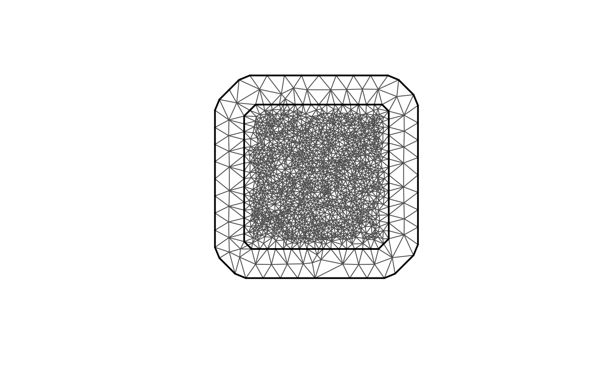
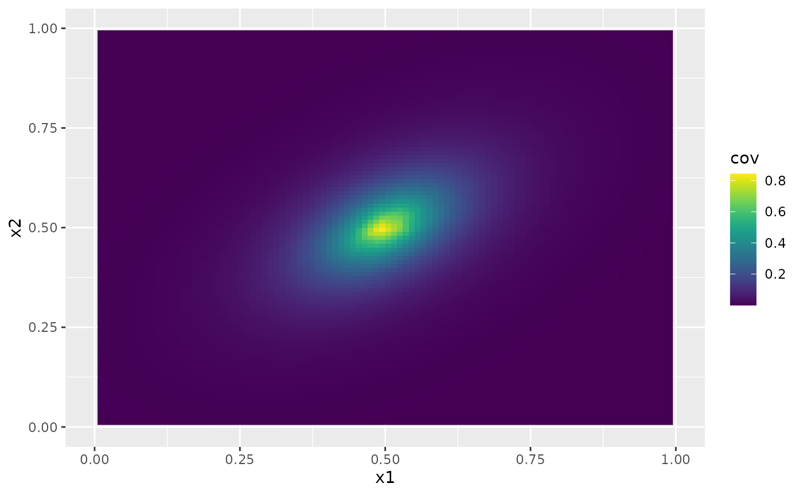
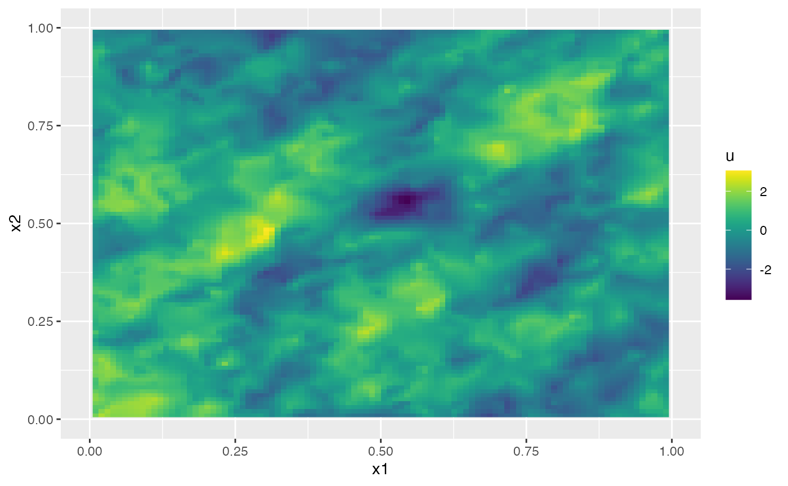
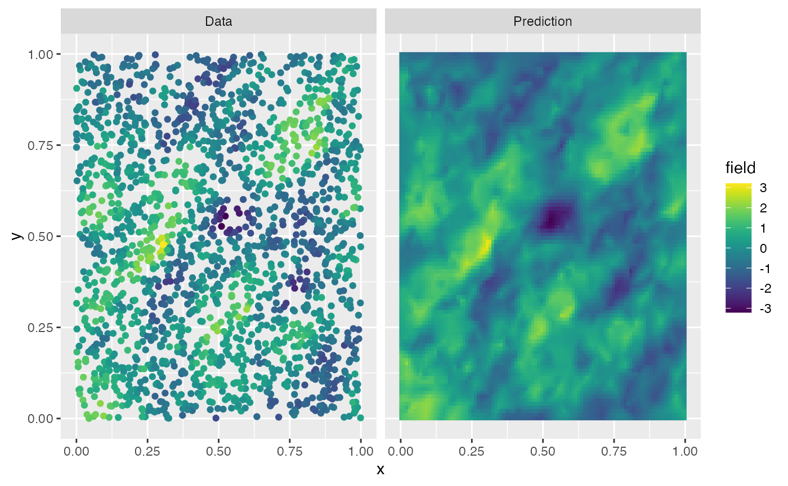

Anisotropic models
David Bolin and Alexandre B. Simas
Created: 2024-10-23. Last modified: 2024-11-03.
=======Anisotropic models
David Bolin and Alexandre B. Simas
Created: 2024-10-23. Last modified: 2024-11-03.
>>>>>>> a85650aaa7f5c4664408037a88cd875367a00eaa Source:vignettes/anisotropic.Rmd
anisotropic.RmdIntroduction
<<<<<<< HEADFor domains \(D\subset
\mathbb{R}^2\), the For domains , the rSPDE package implements the
anisotropic Matérn model \[
(I - \nabla\cdot (H\nabla))^{(\nu + 1)/2} u = c\sigma W, \quad
\text{on } D
\] Where \(H\) is a \(2\times 2\) positive definite matrix, \(\sigma, \nu >0\) and \(c\) is a constant chosen such that \(u\) would have the covariance function
\[
r(h) = \frac{\sigma^2}{2^{\nu-1}\Gamma(\nu)} (\sqrt{h^T H^{-1} h})^{\nu}
K_{\nu}(\sqrt{h^T H^{-1} h}),
\] if the domain was \(D =
\mathbb{R}^2\), i.e., a stationary and anisotropic Matérn
covariance function. The matrix \(H\)
is defined as \[
=======
rSPDE package implements the anisotropic Matérn model Where is a positive definite matrix, and is a constant chosen such that would have the covariance function if the domain was , i.e., a stationary and anisotropic Matérn covariance function. The matrix is defined as
Implementation details
Let us begin by loading some packages needed for making the plots
<<<<<<< HEADWe start by creating a region of interest and a spatial mesh using
the fmesher package:
We start by creating a region of interest and a spatial mesh using the fmesher package:
library(fmesher)
n_loc <- 2000
loc_2d_mesh <- matrix(runif(n_loc * 2), n_loc, 2)
mesh_2d <- fm_mesh_2d(
loc = loc_2d_mesh,
cutoff = 0.01,
max.edge = c(0.1, 0.5)
)
plot(mesh_2d, main = "")
<<<<<<< HEADWe now specify the model using the matern2d.operators
function.
We now specify the model using the matern2d.operators function.
sigma <- 1
nu = 0.5
hx <- 0.08
hy <- 0.08
hxy <- 0.5
op <- matern2d.operators(hx = hx, hy = hy, hxy = hxy, nu = nu,
sigma = sigma, mesh = mesh_2d)The matern2d.operators object has
cov_function_mesh method which can be used evaluate the
covariance function on the mesh. For example
The matern2d.operators object has cov_function_mesh method which can be used evaluate the covariance function on the mesh. For example
r <- op$cov_function_mesh(matrix(c(0.5,0.5),1,2))
proj <- fm_evaluator(mesh_2d, dims = c(100, 100), xlim = c(0,1), ylim = c(0,1))
r.mesh <- fm_evaluate(proj, field = as.vector(r))
cov.df <- data.frame(x1 = proj$lattice$loc[,1],
x2 = proj$lattice$loc[,2],
cov = c(r.mesh))
ggplot(cov.df, aes(x = x1, y = x2, fill = cov)) + geom_raster() + xlim(0,1) + ylim(0,1) + scale_fill_viridis()
#> Warning: Removed 396 rows containing missing values or values outside the scale range
#> (`geom_raster()`).
<<<<<<< HEADWe can simulate from the field using the
simulate method:
We can simulate from the field using the simulate method:
u <- simulate(op)
proj <- fm_evaluator(mesh_2d, dims = c(100, 100), xlim = c(0,1), ylim = c(0,1))
u.mesh <- fm_evaluate(proj, field = as.vector(u))
cov.df <- data.frame(x1 = proj$lattice$loc[,1],
x2 = proj$lattice$loc[,2],
u = c(u.mesh))
ggplot(cov.df, aes(x = x1, y = x2, fill = u)) + geom_raster() + xlim(0,1) + ylim(0,1) + scale_fill_viridis()
#> Warning: Removed 396 rows containing missing values or values outside the scale range
#> (`geom_raster()`).
Let us now simulate some data based on this simulated field.
n.obs <- 2000
obs.loc <- cbind(runif(n.obs),runif(n.obs))
A <- fm_basis(mesh_2d,obs.loc)
sigma.e <- 0.1
Y <- as.vector(A%*%u + sigma.e*rnorm(n.obs))We can compute kriging predictions of the process \(u\) based on these observations. To specify
which locations that should be predicted, the argument Aprd
is used. This argument should be an observation matrix that links the
mesh locations to the prediction locations.
We can compute kriging predictions of the process based on these observations. To specify which locations that should be predicted, the argument Aprd is used. This argument should be an observation matrix that links the mesh locations to the prediction locations.
A <- op$make_A(obs.loc)
Aprd <- op$make_A(proj$lattice$loc)
u.krig <- predict(op, A = A, Aprd = Aprd, Y = Y, sigma.e = sigma.e)The process simulation, and the kriging prediction are shown in the following figure.
=======The process simulation, and the kriging prediction are shown in the following figure.
>>>>>>> a85650aaa7f5c4664408037a88cd875367a00eaa
data.df <- data.frame(x = obs.loc[,1], y = obs.loc[,2], field = Y, type = "Data")
krig.df <- data.frame(x = proj$lattice$loc[,1], y = proj$lattice$loc[,2],
field = as.vector(u.krig$mean), type = "Prediction")
df_plot <- rbind(data.df, krig.df)
ggplot(df_plot) + aes(x = x, y = y, fill = field) +
facet_wrap(~type) + geom_raster(data = krig.df) +
geom_point(data = data.df, aes(colour = field),
show.legend = FALSE) +
scale_fill_viridis() + scale_colour_viridis() Let us finally use
Let us finally use rspde_lme to estimate the parameters
based on the data.
df <- data.frame(Y = as.matrix(Y), x = obs.loc[,1], y = obs.loc[,2])
res <- rspde_lme(Y ~ 1, loc = c("x","y"), data = df, model = op, parallel = TRUE)In the call, y~1 indicates that we also want to estimate
a mean value of the model, and the arguments loc provides
the names of the spatial and temporal coordinates in the data frame. Let
us see a summary of the fitted model:
Let us finally use rspde_lme to estimate the parameters based on the data.
df <- data.frame(Y = as.matrix(Y), x = obs.loc[,1], y = obs.loc[,2])
res <- rspde_lme(Y ~ 1, loc = c("x","y"), data = df, model = op, parallel = TRUE)
#> Warning in rspde_lme(Y ~ 1, loc = c("x", "y"), data = df, model = op, parallel
#> = TRUE): The optimization failed to provide a numerically positive-definite
#> Hessian. You can try to obtain a positive-definite Hessian by setting
#> 'improve_hessian' to TRUE or by setting 'parallel' to FALSE, which allows other
#> optimization methods to be used.In the call, y~1 indicates that we also want to estimate a mean value of the model, and the arguments loc provides the names of the spatial and temporal coordinates in the data frame. Let us see a summary of the fitted model:
summary(res)
#>
#> Latent model - Anisotropic Whittle-Matern
#>
#> Call:
#> rspde_lme(formula = Y ~ 1, loc = c("x", "y"), data = df, model = op,
#> parallel = TRUE)
#>
#> Fixed effects:
<<<<<<< HEAD
#> Estimate Std.error z-value Pr(>|z|)
#> (Intercept) -0.04045 0.17301 -0.234 0.815
#>
#> Random effects:
#> Estimate Std.error z-value
#> nu 0.49789 0.06372 7.814
#> sigma 1.01642 0.05983 16.989
#> hx 0.09717 0.01792 5.422
#> hy 0.09168 0.01661 5.520
#> hxy 0.54739 0.05540 9.880
#>
#> Measurement error:
#> Estimate Std.error z-value
#> std. dev 0.101149 0.002719 37.2
#> ---
#> Signif. codes: 0 '***' 0.001 '**' 0.01 '*' 0.05 '.' 0.1 ' ' 1
#>
#> Log-Likelihood: -121.6109
#> Number of function calls by 'optim' = 42
#> Optimization method used in 'optim' = L-BFGS-B
#>
#> Time used to: fit the model = 4.31951 secs
#> set up the parallelization = 10.2325 secsLet us compare the estimated results with the true values:
results <- data.frame(sigma = c(sigma, res$coeff$random_effects[2]),
hx = c(hx, res$coeff$random_effects[3]),
hy = c(hy, res$coeff$random_effects[4]),
hxy = c(hxy, res$coeff$random_effects[5]),
nu = c(nu, res$coeff$random_effects[1]),
sigma.e = c(sigma.e, res$coeff$measurement_error),
intercept = c(0, res$coeff$fixed_effects),
row.names = c("True", "Estimate"))
print(results)
<<<<<<< HEAD
#> sigma hx hy hxy nu sigma.e
#> True 1.000000 0.08000000 0.08000000 0.5000000 0.5000000 0.1000000
#> Estimate 1.016422 0.09717222 0.09167818 0.5473902 0.4978886 0.1011489
#> intercept
#> True 0.00000000
#> Estimate -0.04044725Finally, we can also do prediction based on the fitted model as
pred.data <- data.frame(x = proj$lattice$loc[,1], y = proj$lattice$loc[,2])
pred <- predict(res, newdata = pred.data, loc = c("x","y"))
data.df <- data.frame(x = obs.loc[,1], y = obs.loc[,2], field = Y, type = "Data")
krig.df <- data.frame(x = proj$lattice$loc[,1], y = proj$lattice$loc[,2],
field = as.vector(u.krig$mean), type = "Prediction")
df_plot <- rbind(data.df, krig.df)
ggplot(df_plot) + aes(x = x, y = y, fill = field) +
facet_wrap(~type) + geom_raster(data = krig.df) +
geom_point(data = data.df, aes(colour = field),
show.legend = FALSE) +
scale_fill_viridis() + scale_colour_viridis()